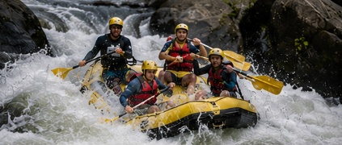

Corredeiras para Iniciantes
Ideal para famílias e pessoas que estão praticando rafting pela primeira vez. Este passeio oferece corredeiras leves, paisagens incríveis e total segurança com acompanhamento de guias experientes.

Nossa equipe está pronta para ajudar você a encontrar a aventura ideal. Entre em contato conosco para obter mais informações e fazer sua reserva.
Fale Conosco
Ideal para famílias e pessoas que estão praticando rafting pela primeira vez. Este passeio oferece corredeiras leves, paisagens incríveis e total segurança com acompanhamento de guias experientes.

Um passeio equilibrado entre emoção e contemplação da natureza. Perfeito para quem já possui alguma experiência e deseja enfrentar corredeiras moderadas enquanto aprecia belas paisagens.

Nossa aventura mais radical. Enfrente corredeiras intensas, obstáculos desafiadores e muita adrenalina em um passeio projetado para aventureiros experientes.
| Passeio | Duração | Dificuldade | Idade Mínima | Preço |
|---|---|---|---|---|
| Corredeiras para Iniciantes | 2 horas | Fácil | 8 anos | R$ 250 |
| Explorador do Rio | 4 horas | Média | 12 anos | R$ 420 |
| Desafio Extremo | Dia inteiro | Avançada | 16 anos | R$ 690 |